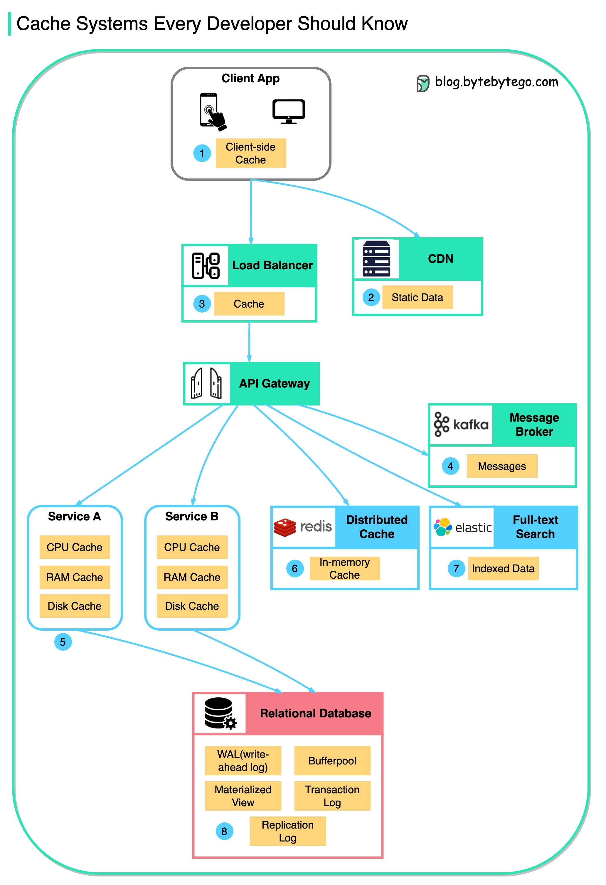
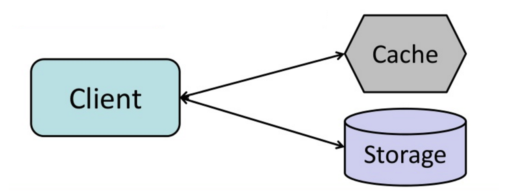
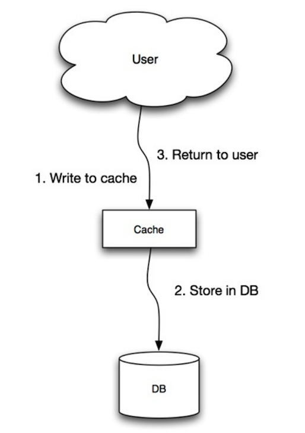
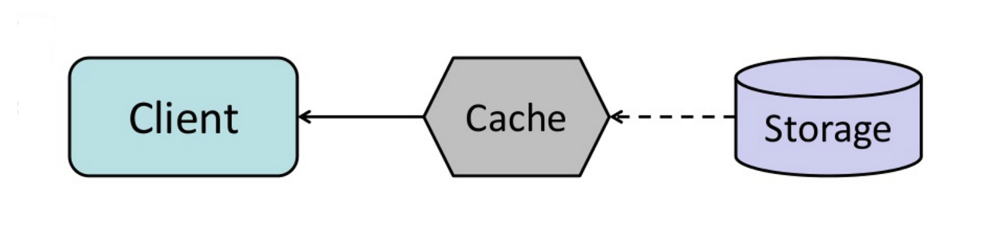

⚡ Caching
Storing computed results closer to the consumer. Understand the strategies, the tradeoffs, and Redis's data model deeply enough to use it well.
Cache Strategies
Caching buys you database headroom and latency reduction by trading freshness for speed. Caching exists at multiple layers of a system — browser, CDN, load balancer, application, and database. The tricky part is cache invalidation — how and when stale data gets evicted. "There are only two hard problems in computer science: cache invalidation and naming things" is a joke that contains a lot of truth.

Cache-Aside (Lazy Loading)
The application is responsible for reading from and writing to the cache. On a cache miss, the app fetches from the database, writes the result to the cache, and returns it. On a cache hit, the database is never touched.
async function getUser(id) {
const cached = await redis.get(`user:${id}`);
if (cached) return JSON.parse(cached);
const user = await db.query('SELECT * FROM users WHERE id = $1', [id]);
await redis.setex(`user:${id}`, 3600, JSON.stringify(user)); // TTL: 1 hour
return user;
}Strengths: only caches data that's actually requested, resilient to cache failure (miss just goes to DB), cache structure is independent from database schema. Weakness: first request always misses (thundering herd if a hot key expires and 1000 requests hit simultaneously — mitigate with a mutex/lock or probabilistic early expiration). Cache can become stale if the DB is updated by another path — requires explicit invalidation on writes.

Write-Through
Every write goes to both the cache and the database atomically. The cache is always in sync with the database. No stale reads after a write from the same path. Weakness: every write is slower (two writes instead of one), and you cache data that may never be read. Write-through is a good default for data that's read frequently after being written.

Write-Behind (Write-Back)
Writes go to the cache immediately and are asynchronously flushed to the database in the background. Very low write latency. Dangerous: if the cache host fails before the write is flushed, data is lost. Appropriate when: you can tolerate some data loss (analytics counters, non-critical events), writes are extremely high-frequency and batching saves significant DB load. Redis AOF + RDB persistence makes this safer.

Cache Invalidation Strategies
The three main approaches:
- TTL (time-to-live): every cached entry expires after N seconds. Simple, self-healing, but potentially serves stale data up to N seconds. The right TTL depends on how often the underlying data changes and how much staleness is acceptable. For user profiles: 5–60 minutes is usually fine. For inventory counts: seconds. For static site content: hours or days.
- Event-driven invalidation: when the underlying data changes, explicitly delete or update the cache entry. Ensures freshness but requires the writer to know about all cache keys that might be affected. Complex when one data change affects many cache keys.
- Cache versioning: instead of invalidating, change the cache key when data changes. Store a version token in the cache key:
user:v3:123. The old key is never accessed again and expires naturally. Eliminates stale reads entirely but requires tracking current versions.
Eviction Policies
When a cache is full, it must evict entries to make room. Redis policies (set via maxmemory-policy):
- allkeys-lru: evict the least recently used key across all keys. Good default for caches.
- volatile-lru: LRU but only among keys with a TTL set. Preserves non-expiring keys.
- allkeys-lfu: evict the least frequently used. Better than LRU when access patterns are stable (protects hot keys that haven't been accessed recently).
- noeviction: return errors when memory is full. Never use for a cache (use for a primary data store where you need writes to fail explicitly).
Refresh-Ahead
The cache proactively refreshes entries before they expire, based on predicted access patterns. Entries are refreshed in the background before the TTL runs out. Users always get cache hits at the cost of sometimes refreshing entries that won't be accessed again. Good for: predictable hot keys (top-N leaderboard, trending content) where you know demand will continue.

Cache Stampede / Thundering Herd
When a hot, heavily-cached key expires simultaneously for thousands of requests, all of them miss and simultaneously hit the database. Solutions: locking (only one request populates the cache, others wait or return stale), probabilistic early expiration (a request randomly decides to refresh the cache slightly before it expires, staggering the expiry across the population), or stale-while-revalidate (serve the stale value immediately while a background job refreshes it).
Redis Deep Dive
Redis is an in-memory data structure server. "In-memory" means reads and writes are orders of magnitude faster than any disk-backed database — typically sub-millisecond. It's single-threaded for command execution (Redis 6+ uses I/O threads for networking, but commands still execute serially), which eliminates locking overhead and makes behavior predictable. Single-threaded also means one slow command (like KEYS * on a large keyspace) blocks all other commands. This is why KEYS is banned in production — use SCAN instead.
Data Structures
Redis isn't just a key-value store — it has rich data structures, each optimized for specific access patterns:
- String: bytes, integers, or serialized JSON.
GET/SET/INCR/EXPIRE. Use for: simple cache values, counters, distributed locks.INCRis atomic — safe for counting without a mutex. - Hash: field-value pairs in a single key.
HGET/HSET/HGETALL. Use for: object fields where you want to read/update individual fields without deserializing the whole object. More memory-efficient than a string per field for small hashes (Redis uses ziplist encoding internally). - List: ordered list with O(1) push/pop from both ends.
LPUSH/RPOP/LRANGE/BLPOP(blocking pop). Use for: queues (LPUSH+BRPOP), activity feeds, task queues. Not great for random access by index. - Set: unordered collection of unique strings.
SADD/SMEMBERS/SISMEMBER/SUNION/SINTER. Use for: unique visitor tracking, tag systems, friends-of-friends intersections.SADDis idempotent — adding a duplicate is a no-op. - Sorted Set (ZSet): set where each member has a float score. Members sorted by score.
ZADD/ZRANGE/ZRANGEBYSCORE/ZRANK. Use for: leaderboards, priority queues, rate limiting (score = timestamp), autocomplete. One of Redis's most powerful structures. - HyperLogLog: probabilistic structure for counting unique elements with constant memory (~12KB regardless of cardinality). Error rate ~0.81%.
PFADD/PFCOUNT. Use for: "how many unique users visited today?" when an approximate answer is sufficient. - Stream: append-only log of messages. Consumer groups for parallel processing, acknowledgment, and pending entry redelivery on consumer failure. Use for: event log, message queue with consumer groups (similar to Kafka partitions but simpler). Added in Redis 5.0.
Persistence
Redis is in-memory, but can persist to disk:
- RDB (Snapshot): periodic point-in-time snapshot of the full dataset. Fast to load on restart, compact files, but you lose data written between snapshots. Good for: cache that can tolerate cold start.
- AOF (Append-Only File): log every write command and replay on restart. Three fsync policies:
always(maximum durability, perf hit),everysec(lose at most 1s of data — recommended),no(OS decides when to flush, fastest, least safe). For a primary data store (sessions, rate limit counters, queues), use AOF witheverysec.
Practical Patterns
Distributed lock: SET lock:resource unique_token NX PX 30000 — atomic set-if-not-exists with 30s TTL. Release by deleting the key only if the value matches your token (use a Lua script for atomic check-and-delete — prevents releasing another process's lock after your TTL expired and they acquired it).
Rate limiting with sorted sets: per-user sorted set where score = Unix timestamp. Add a request: ZADD rl:user:123 $now $requestId. Remove old entries: ZREMRANGEBYSCORE rl:user:123 0 ($now - windowMs). Count requests: ZCARD rl:user:123. Compare to limit. Wrap in a Lua script for atomicity.
Session storage: HSET session:$token user_id 123 role admin with a TTL via EXPIRE. HGETALL to load. Expire the session on logout with DEL.
Redis Cluster vs Sentinel
Sentinel: high availability for a single primary. Sentinel processes monitor the primary and replicas, detect failures, and promote a replica automatically. Up to a few GB of data. Good for HA without horizontal scaling.
Cluster: horizontal sharding across multiple primaries. Data distributed across 16,384 hash slots assigned to primaries. Enables multi-TB datasets and horizontal write scaling. Trade-off: multi-key commands must target keys in the same slot — use hash tags like {user:123}:cart and {user:123}:profile to force the same slot.
HTTP Caching & CDN
HTTP has built-in caching semantics. Understanding them means you can cache responses in browsers, reverse proxies, and CDNs without writing any application code — just HTTP headers. This is the highest-leverage caching: it removes load entirely, not just database load.
Cache-Control Header
The primary mechanism for controlling caching behavior:
max-age=3600— cache for 3600 seconds. Browsers and CDNs both respect this.no-cache— confusingly named: does cache, but must revalidate with the server before using cached content. Useful when content may change but you want conditional requests to avoid re-downloading.no-store— never cache at all. Use for sensitive data (banking, health records).private— browser caches it, CDNs/proxies don't. Use for personalized authenticated responses.public— anyone can cache it. Use for static assets and public API responses.s-maxage=86400— likemax-agebut only for shared caches (CDNs). Lets you set different TTLs for CDN vs browser.stale-while-revalidate=60— serve stale content while revalidating in background for up to 60s. Aggressive caching without cold-start latency spikes.
Conditional Requests (Validation)
Even when a cached response expires, you don't always need to re-download the full body. Conditional requests ask: "has this changed?" If not, the server responds with 304 Not Modified — much cheaper than a full response.
- ETag: server sends
ETag: "abc123"(hash of content). Client sendsIf-None-Match: "abc123"on revalidation. Match = 304. Changed = 200 + new content + new ETag. - Last-Modified: server sends
Last-Modified: Wed, 21 Oct 2024 07:28:00 GMT. Client sendsIf-Modified-Since: .... Unchanged = 304. ETags are more reliable — timestamps have 1-second granularity and can be unreliable across servers.
Cache Busting
For static assets (JS, CSS, images), you want very long max-ages (1 year) so browsers never re-fetch them. When you deploy a new version, you need the browser to get the new file. The solution is content-addressed filenames: include the file's hash in the filename — main.a3f7bc.js. The URL changes with the content, so the browser's cache for the old URL is irrelevant, and the new URL gets a fresh cache with a long TTL. Webpack, Vite, and most bundlers do this automatically with contenthash in output filenames.
CDN Architecture
A CDN is a geographically distributed network of cache servers ("edge nodes" or "PoPs — Points of Presence"). When a user requests a resource: DNS resolves to the nearest edge node via anycast or latency-based routing. If the edge has it cached (HIT) — served immediately, millisecond latency. If not (MISS) — edge fetches from your origin, caches the response, serves the user. Subsequent requests on the same edge are HITs.
CDNs are most valuable for: static assets (99%+ hit rates after warm-up), global user bases (edge near the user is far better than a round-trip to your single-region origin), and absorbing traffic spikes (CDN handles most requests; origin only sees misses). For dynamic content, modern edge compute platforms (Cloudflare Workers, Lambda@Edge) let you run code at the edge — caching personalized content, A/B testing, or response transformation without a full origin round-trip.

Vary Header
Vary: Accept-Encoding tells CDNs to cache separate copies of a response for different encodings. Without it, a CDN might serve a gzip-compressed response to a client that can't handle it. Common: Vary: Accept-Encoding (gzip vs brotli vs none). Avoid Vary: Cookie at the CDN level — every cookie value becomes a separate cache entry, effectively disabling caching.